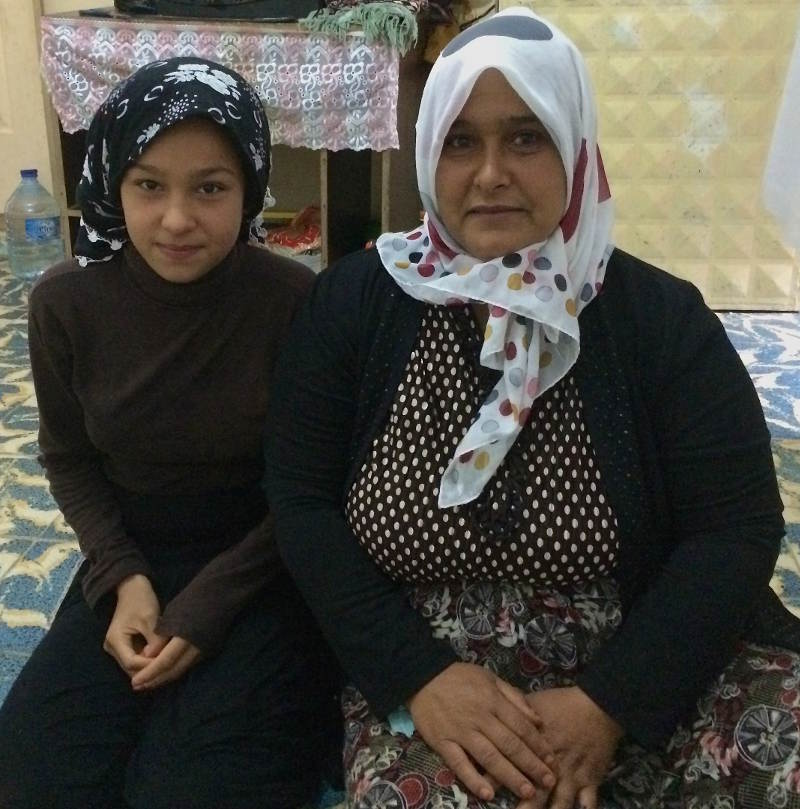
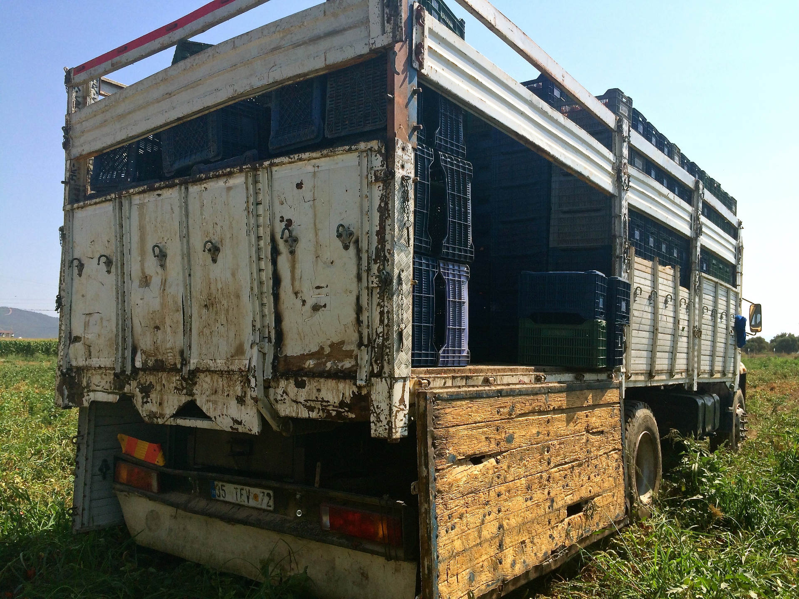
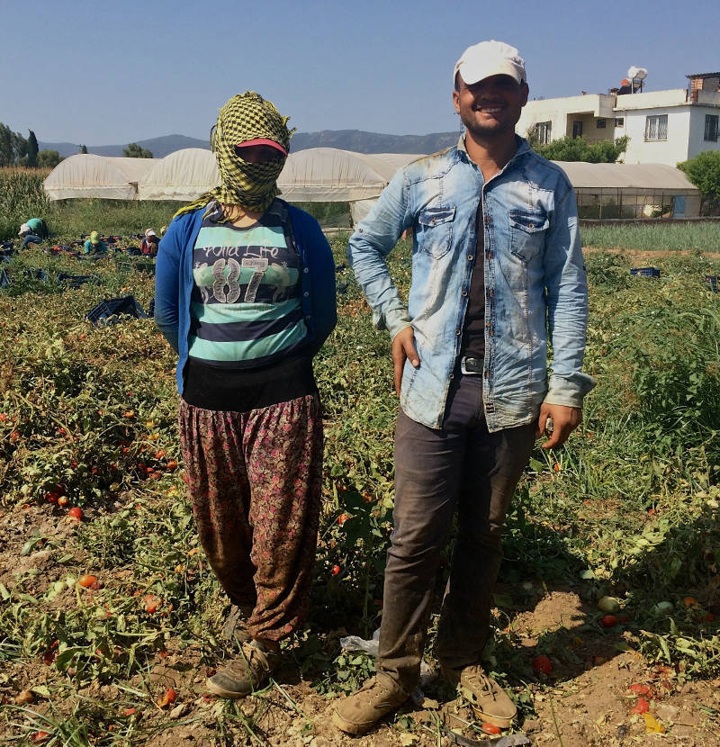
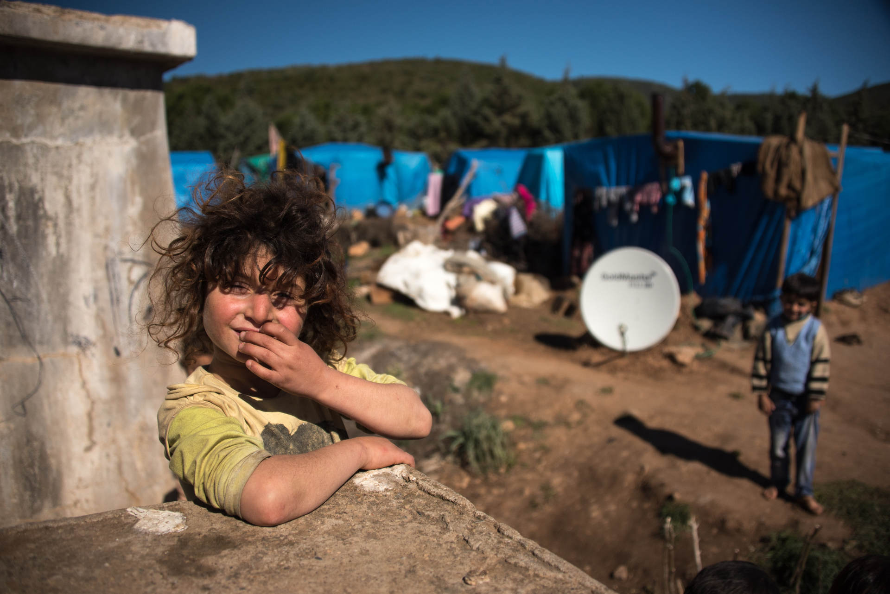

Zeynep Sentek, Margherita Bettoni
Refugees picking fruit: Torbali, Turkey. Credit: Diego Cupolo

"I wanted my daughter Jaziye to have a good life, but I cannot even dream about it now"
Fatma, 35, Syrian refugee in Turkey
Every morning at 4am, Fatma wakes her 11-year-old daughter, Jaziye. In their one-room apartment, she prepares a plate of pita bread and cheese and watches her child slowly dress herself.
Jaziye is tired and wants to stay at home. As they sit on pillows on the floor and eat their breakfast, she pleads with her mother. It is painful for Fatma to wake her so early. Her eldest child is still young and needs her rest.
But she has five other children to feed. Aged between three and ten, they are still sleeping in the room.
As the summer dawn rises, Fatma and Jaziye leave the tiny run-down block and take the short walk to the end of the street, where a line of battered pick-up trucks are waiting.
Already, around 80 workers, mostly women, some children, are climbing on board the vehicles.
The day-labourers will spend the day under the hot sun, picking fruit in the fields outside the rural town of Torbali in the Izmir district of west Turkey.
Jaziye is one of the thousands of Syrian refugee children working in Turkey’s agricultural sector. Many work for up to 11 hours a day harvesting local produce.
These tomatoes, grapes, peppers and peaches end up wrapped in plastic or in fruit boxes on the shelves of supermarkets in London, Berlin and Paris.
Both mother and daughter earn about ten Euro in total for their long shift. This is well below Turkey’s meagre minimum wage of circa 16 Euro per day.
“In Aleppo, my dream was to be a teacher. Not anymore”
On a scorching July morning in Torbali, Fatma, 35, tells The Black Sea that she came to Turkey with her family - a husband and six children - from Aleppo, Syria in 2014. The city was under siege, terrorized by gun battles between rebels, jihadists and the Assad government, plus their international backers and bombing campaigns.
The family chose Torbali because a friend promised they could find work. Fatma was hired to pick fruit in the local fields, while her husband found a job as a labourer on a construction site. Both are unregistered. Neither has employment insurance. None of the children can go to school.
In the summer of 2016, Jaziye joined her mother in the fields for harvest time.
“My daughter was a very hardworking student in Aleppo,” she says. “I want her life to be good, but I cannot even dream about it now.”
Jaziye sits on the floor behind her mother, her knees folded up to her belly. She is thin, shy and petite. Occasionally she smiles. When asked, she says that her dream was to become a teacher.
“That was when I was in Aleppo,” she says. “Not anymore.”
There are over 2.7 million registered Syrians seeking refuge in Turkey - from which 1.5 million are children.
Like the vast majority, Fatma chooses not to live in the camps, where she says cannot work and would be dependent on paltry food handouts from the Turkish government.
Despite the three billion Euro deal between the EU and Turkey on Syrian refugees, these displaced citizens receive no financial assistance from the Turkish state or help from international aid agencies.
Instead they work six days a week to earn enough money to help them through the winter.
That is if they ever get paid.
The chavush - meaning ‘boss’ in Arabic - are Turkish middlemen who mobilize Syrian workers and take a cut of their earnings. Every field has a chavush, and he - always a man - decides who gets to work and where. He pays the refugees in cash.
“The payments are always late,” Fatma says. “We need to wait for months until they decide to pay us.”
Fatma describes the working conditions as “slave-like”. In the 40-degree heat, workers must fill the truck before they can leave for the day. Each truck holds 600 crates. “If the truck isn’t full, you can’t leave,” says Fatma.
The conditions are tortuous.
“The chavush doesn’t let us rest,” the mother-of-six adds. “All day long he just keeps shouting ‘faster, faster’.”
Fifteen-year-old Iman fled the city of Kobane in northern Syria when ISIS and Kurdish forces started fighting in 2015. For over a year she and her family have been in Torbali, where she and her 14-year old brother, Eymen, work in the fields. Like Fatma and Jaziye, she says the environment is tough.
“We are not allowed to talk to each other while working,” she adds.
The workers have only 30 minutes break in the day, when they must eat quickly. Despite the abundant harvest all around them, the workers must bring their own food.
However the chavush do provide some water.
In time, Iman learned to handle her chavush. “If you don’t obey them,” she adds, “you don’t get your next shift.”
Farming boom backed by cheap refugee labour
Turkey prides itself as the home of a modern agricultural miracle. In a speech in 2012, Prime Minister Erdogan, later elected president, said, “We see agriculture as a strategic sector and we act accordingly.”
Since Erdogan’s AKP came into power in 2002, Turkey’s agricultural exports rose significantly from three billion USD to 12.3 billion USD in 2015.
This agricultural boom is built on businesses hiring workers as cheap as possible. The main source is Turkey’s poor. These are typically Kurds, who migrate seasonally across the country as each crop ripens. This work pays around 20 Euro per day, and the year's harvest lasts from April to October.
If the workers live in tents on the farm during the harvest, the money earned might be enough to see them through the harsh southeast winter, where they return home.
But they are experiencing new competition on the labour market. The humanitarian crisis in Syria means two million refugees across Turkey survive on whatever work is available.
In the target markets for the products, child labour is illegal or heavily regulated. But almost no one is overseeing the agricultural sector in Turkey.

In the 40-degree heat, workers must fill the truck with 600 crates before they can leave.
Farm owners and middlemen have welcomed the refugees as a force willing to work for up to half what Turks and Kurds are paid. For children it can be even less.
“I know Turks complain because we are okay with less money and no insurance“, says Fatma. “But what can we do?“
“Pick the good ones for Germany”
The EU and Russia are Turkey’s biggest customers for fruit and vegetables. But this is not only mass-market produce. Organic fruit and vegetables from Turkey also see high demand from Germany, the USA, France, and the Netherlands.
Ahmed, 45, was a school headmaster in the city of Afrin, northern Syria. Now he picks fruit and vegetable in Torbali. He says that each day the truck drivers tell them where the day’s load will be sold.
“They say: ‘Today, these peaches will go to Germany; the rest will go to Russia. Tomorrow it’s Israel’,” he says. The same is true of the tomato puree factory in town, where Ahmed also has a shift. The produce is picked by unregistered Syrian workers, including children.
"The labels are printed in several European languages, including German and English," Ahmed says.
In the target markets for the products, child labour is illegal or heavily regulated. But almost no one is overseeing the agricultural sector in Turkey. No one is verifying whether the supply chain is free from exploitation. Checks by foreign businesses which profit from their harvest are not noticeable.
Fatma, too, is aware that her and Jaziye's efforts are destined for the dinner tables of European countries. “The chavush says, ‘pick the good ones for Germany; pick the unblemished ones for Europe,’” she says. “So we separate the clean ones and put them in a different part in the truck.”
Refugee Syrian children working night shifts at a Turkish tomato puree factory suffer from fainting due to overwork

15 year-old refugee from Aleppo, Medina (left), has been working in Turkish fields since she was 13 with her brother Huseyin
In a huge field outside Torbali, 15 women pick tomatoes in nearly 40 degree heat. 15 year-old Medina from Aleppo picks tomatoes for a local company in Torbali, which are later sun-dried for the EU.
She works six days a week in Turkish fields and has done so since she was 13. Like other child refugees working in Turkey, she doesn’t attend school. Toiling the fields, she makes ten Euro per day, but was recently promised a two Euro raise.
“The increase is good,” she tells The Black Sea, her face covered with a scarf to protect it from the sun. "But I don’t expect anything from life anymore. I just want to go back to Aleppo.”
The hot and strenuous work causes health problems for the kids. Heat stroke is common. When this happens, Ahmed says "[the children] are sent to hospitals, given rest time for a couple of days, but then they’re expected to be back in the field again.” Children at the local puree factory collapse during night shifts. “They get fatigued and faint because they are just children,” says Ahmed.
The Turkish Labour Code prohibits children under 18 working night shifts. Meanwhile under-14s are not allowed to work at all. Aliya has three daughters aged 13, 14 and 17. Aliya tells The Black Sea that they arrived in Turkey from Kobane two years ago after ISIS invaded the town and burnt down their house. The father was already long gone, but relatives working in the fields around in Menemen, a town in rural Izmir, convinced Aliya and the girls to join them.
Menemen is famous for its raisins and vast vineyards. Over 90 percent of the produce is exported, mainly to Europe.
A local chavush put the the family to work picking. The job was familiar. In Kobane, they had their own land, but it wasn’t heavy and required only a couple of hours a day to maintain. “But it’s not like that here in Turkey,” says Aliya.
Like Fatma and Jaziye, Aliya and her elder two daughters must work from 5am and 2pm, six-days-a-week - sometimes seven, if the chavush calls. “If that happens, we go,” Aliya says, “because we don’t want to say no to the chavush and risk losing the work altogether.”
In Kobane, the girls attended school and had aspirations. Fourteen-year-old Suad tells the Black Sea that she had wanted to be a doctor.
“Now I don’t think about the future anymore.”
Half a million Syrian kids “outside system”
The number of child workers among Syrian refugees is unknown. UNICEF estimates that more than half a million Syrian school-age refugees in Turkey have no education and are outside the system of vocational or academic learning.
The Turkish Statistics Institute claims that one million children work in Turkey, half of which are employed in agriculture.
But this data does not count refugee children, and the majority of the agricultural labour force is unregistered.
“These kids have war trauma and are pushed to the margins of society,”
Cem Terzi, Bridging People’s Association
The fear is that a phantom workforce of Syrians is fuelling the Turkish economy. And this is made of child refugees who have suffered twice - once at the hands of war in the own country, and again at the hands of labour exploitation in their host nation.
“They are called the lost generation and it is an accurate description,” says Cem Terzi, head of the Bridging People’s Association, an Izmir-based volunteer group helping local refugees.
From the balcony of the apartment used as the association's base of operations, Terzi tells the Black Sea that the plight of refugee children should not be underestimated.
“The situation is terrifying," he says, "These kids have war trauma, and on top of it they are pushed to the margins of society."
This fear is echoed by Muhammed Salih, an ethnic Syrian and coordinator of Izmir-based Syrian Solidarity Association. “We don’t know what’s going to happen to these kids in ten years," he says. "I just know it’s not going to be good. They are vulnerable and open to exploitation if they don’t get educated. Troubled children become troubled adults.”

Over 1.5 million refugee children from Syria are living in Turkey - many in settlements where their parents work on farms. Credit: Diego Cupolo
Syrian kids can attend Turkish schools - but only if they know the language. Few do. The number of special schools teaching in both Arabic and Turkish is extremely limited, and are usually in city centres, which children from rural areas cannot access. Instead, hundreds of thousands of children are forced to work to help keep their families from starving.
“Nobody cares about education if they don’t have anything to eat,” says Salih.
Some Syrians have tried to fill the void. Former headmaster Ahmed shows The Black Sea journalists around the neighbourhood, talking enthusiastically of his plans for a school for Syrians.
“If there were schools for Syrian kids, there would be order and they would have a future instead of picking fruit as the only means to survive,” he says.
Ahmed himself goes to Turkish classes every day - and studies the language every night.
His children now speak and understand Turkish better than he does
We pass a local Turkish school. On the wall is scribbled graffiti which reads: “Filthy Syrians”.
To realise his ambition, Ahmed has lobbied local and state authorities to open a school for refugee kids in Torbali. But he is consistently ignored. “They all tell me there is no space,” he says.
"They will go to school, but die of hunger”
Consumer pressure could help stop child labour in Turkey. People in the west need to know the provenance of their tomatoes, peppers and raisins, and the conditions that allow them to come to market for a low price.
“If Europe says: ‘we are not buying these products’, this would end,” says Ezgi Koman from the Agenda Children Association - an Ankara-based NGO.
While the debate about the efficacy of the refugee deals between the EU and Turkey rages, thousands of families are left to struggle with little organised support, or access to vital services.
Ezgi says that there is no governmental policy alternative to working children. Even if the state could manage a system that forced them into education, they would still need to work to survive.
“What’s going to happen when they stop working?" she says. "They will go to school, but die of hunger? Turkey and the EU need to think about that too, but nobody cares.”
But it is hard to find people willing and able to lobby for the rights of these children.
On 11 November 2016, the Turkish Government claimed that Ezgi’s NGO, which fights for children's rights and reported into the killing of Kurdish infants by Turkish armed forces, was a "threat to national security".
The authorities closed it down.
This investigation was supported by Robert Bosch Stiftung’s Reporters in the Field program.